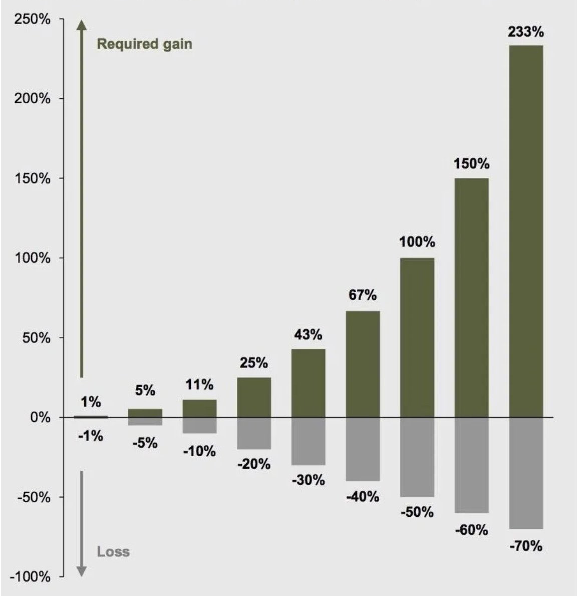
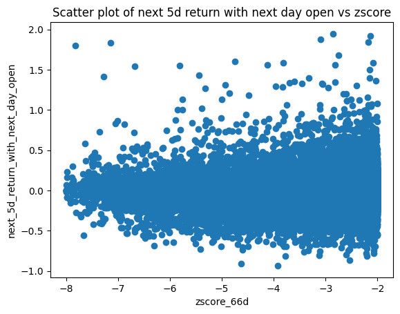
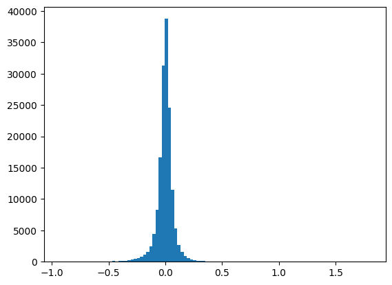

Stock Returns After Extreme Loss Events
May 21, 2025
Table of Contents
Strategy Details
The strategy examines extreme loss events and their subsequent recovery patterns. Extreme loss events are defined as negative returns lower than 97.5% of an asset's daily returns. The analysis is conducted both in time series and cross-sectional dimensions to evaluate the tradability of this approach.
Key Components
- Data Collection:
- Uses Russell 2000 and S&P 500 stocks
- Historical data from 2005 to 2024
- Parallel processing for efficient data handling
- Analysis Framework:
- Time series analysis of individual stocks
- Cross-sectional analysis across multiple stocks
- Statistical validation through regression analysis
import os
import numpy as np
import pandas as pd
import matplotlib.pyplot as plt
import statsmodels.api as sm
import yfinance as yf
from multiprocessing import Pool
symbols_dir = "../Symbols.csv"
symbols = pd.read_csv(symbols_dir, index_col=0)
russel = symbols["US-Equity-Russell-2000"].dropna().values.tolist()
snp = symbols["US-Equity-SNP"].dropna().values.tolist()
# Load the data
def download_data(symbol):
direc = 'data/'
os.makedirs(direc, exist_ok=True)
file_name = os.path.join(direc, symbol + '.csv')
if not os.path.exists(file_name):
ticker = yf.Ticker(symbol)
df = ticker.history(start='2005-01-01', end='2024-5-31')
df.to_csv(file_name)
for i, symbol in enumerate(russel + snp):
print (f'Loading data for {symbol} ({i+1}/{len(russel+snp)})', end='\r')
download_data(symbol)
print (f'Loaded data for {len(russel+snp)} companies')
def process_data(symbol):
df = pd.read_csv(f'data/{symbol}.csv', index_col=0)
df.index = pd.to_datetime(df.index, utc=True).tz_convert('US/Eastern')
df = df[['Open', 'Close']].copy()
# We get the signal after we get the daily close, then, we will be able to
# trade the next day at open. But, I am keeping the today's close for
# research and analysis purposes.
df['next_5d_return_with_next_day_open'] = df['Close'].shift(-5) / df['Open'].shift(-1) - 1
df['next_5d_return_with_today_close'] = df['Close'].shift(-5) / df['Close'] - 1
df['return'] = df['Close'].pct_change()
df['zscore_22d'] = (df['return'] - df['return'].rolling(22).mean()) / df['return'].rolling(22).std()
df['zscore_66d'] = (df['return'] - df['return'].rolling(66).mean()) / df['return'].rolling(66).std()
return df
with Pool(os.cpu_count()-2) as p:
russel_data = p.map(process_data, russel)
with Pool(os.cpu_count()-2) as p:
snp_data = p.map(process_data, snp)
holder_for_regression = []
for symbol, df in zip(russel, russel_data):
df = df.dropna().copy()
df['ticker'] = symbol
df['index'] = 'russel'
holder_for_regression.append(df)
for symbol, df in zip(snp, snp_data):
df = df.dropna().copy()
df['ticker'] = symbol
df['index'] = 'snp'
holder_for_regression.append(df)
df_for_regression = pd.concat(holder_for_regression, axis=0)
X_col = 'zscore_66d'
# Keep the rows with zscore of less than -2
df_for_regression = df_for_regression[df_for_regression[X_col] < -2]
# Drop any next_5d_return_with_next_day_open that over 200%, as outliers
df_for_regression = df_for_regression[df_for_regression['next_5d_return_with_next_day_open'] < 2]
# Run the regression
X = df_for_regression[X_col]
X = sm.add_constant(X)
y = df_for_regression['next_5d_return_with_next_day_open']
model = sm.OLS(y, X)
results = model.fit()
print(results.summary())Code Explanation
This code section implements the core strategy components:
- Data Collection:
- Downloads historical data for Russell 2000 and S&P 500 stocks
- Uses parallel processing for efficient data handling
- Implements caching to avoid redundant downloads
- Data Processing:
- Calculates 5-day forward returns using next day's open price
- Computes daily returns and z-scores
- Uses 22-day and 66-day rolling windows for normalization
Regression Analysis
We perform regression analysis to examine the relationship between extreme losses and subsequent returns:
OLS Regression Results
=============================================================================================
Dep. Variable: next_5d_return_with_next_day_open R-squared: 0.002
Model: OLS Adj. R-squared: 0.002
Method: Least Squares F-statistic: 299.6
Date: Wed, 05 Jun 2024 Prob (F-statistic): 4.42e-67
Time: 00:32:44 Log-Likelihood: 1.8890e+05
No. Observations: 195501 AIC: -3.778e+05
Df Residuals: 195499 BIC: -3.778e+05
Df Model: 1
Covariance Type: nonrobust
==============================================================================
coef std err t P>|t| [0.025 0.975]
------------------------------------------------------------------------------
const 0.0128 0.001 18.204 0.000 0.011 0.014
zscore_66d 0.0042 0.000 17.310 0.000 0.004 0.005
==============================================================================
Omnibus: 84444.610 Durbin-Watson: 1.581
Prob(Omnibus): 0.000 Jarque-Bera (JB): 6002992.764
Skew: 1.230 Prob(JB): 0.00
Kurtosis: 30.035 Cond. No. 10.9
==============================================================================
Notes:
[1] Standard Errors assume that the covariance matrix of the errors is correctly specified.Visualization Analysis
The scatter plot visualization shows:
- Data Distribution:
- Relationship between z-scores and 5-day returns
- Positive correlation between variables
- Outliers and extreme values
- Pattern Analysis:
- Clustering of data points
- Potential non-linear relationships
- Density of observations

Analysis of the Results
Statistical Significance
The analysis reveals several key findings:
- Statistical Significance:
- The factor shows statistically significant results
- The constant term is notably large and significant
- Results align with the paper's findings
zscore_holder = []
next_5d_return_holder = []
price_holder = []
for i, df in enumerate(snp_data):
print (f'Processing data for {snp[i]} ({i+1}/{len(snp)})', end='\r')
price_holder.append(df['Close'].shift(1))
zscore_holder.append(df['zscore_66d'])
next_5d_return_holder.append(df['next_5d_return_with_next_day_open'])
for i, df in enumerate(russel_data):
print (f'Processing data for {russel[i]} ({i+1}/{len(russel)})', end='\r')
price_holder.append(df['Close'].shift(1))
zscore_holder.append(df['zscore_66d'])
next_5d_return_holder.append(df['next_5d_return_with_next_day_open'])
price_df = pd.concat(price_holder, axis=1)
zscore_df = pd.concat(zscore_holder, axis=1)
next_5d_return_df = pd.concat(next_5d_return_holder, axis=1)
price_df.columns = russel + snp
zscore_df.columns = russel + snp
next_5d_return_df.columns = russel + snp
# I'm filtering the data to only include the data where the price is greater than 10
# This is to avoid penny stocks and large transactions costs
price_condition = price_df > 10
# I'm filtering the data to only include the data where the next 5d return is less than 2
# This is to avoid outliers
next_5d_return_df_less_than_2 = next_5d_return_df < 2
# I'm filtering the data to only include the data where the zscore is less than -2
# This is the definition of an extreme event based on the paper.
extreme_loss_events = zscore_df < -2
zscore_df = zscore_df[
price_condition &
next_5d_return_df_less_than_2 &
extreme_loss_events
]
# Let's see how the next 5d return is distributed when the zscore is less than -2
next_5d_return_df = next_5d_return_df[zscore_df.notnull()]
# Print the mean of the next 5d return
print (next_5d_return_df.mean(axis=1, skipna=True).mean())
plt.hist(next_5d_return_df.values.flatten(), bins=100)
plt.show()

portfolio_return = next_5d_return_df.mean(axis=1, skipna=True)
# Because the holding period is 5 days, we assume we split the money into 5 parts
# And each day we buy the stocks that have the zscore less than -2. We will hold
# them for 5 days and then sell them. With the other parts, we will buy the stocks
# that have the zscore less than -2 on the next day. We will do this for 5 days
# Each day represents a new portfolio
# Sharpe ratio
sharpe_ratio = portfolio_return.mean() / portfolio_return.std() * np.sqrt(252)
print (sharpe_ratio)
cumsum = portfolio_return.cumsum()
plt.plot(cumsum)
plt.title('Cumulative return')
plt.show()

Strategy Analysis
The analysis reveals several important considerations:
- Performance Metrics:
- Sharpe ratio is notably high before transaction costs
- Transaction costs may reduce Sharpe ratio to 0.6-0.7
- Strategy still shows promising signal strength
- Key Limitations:
- Survival bias in the analysis
- Market risk exposure
- Need for market hedging